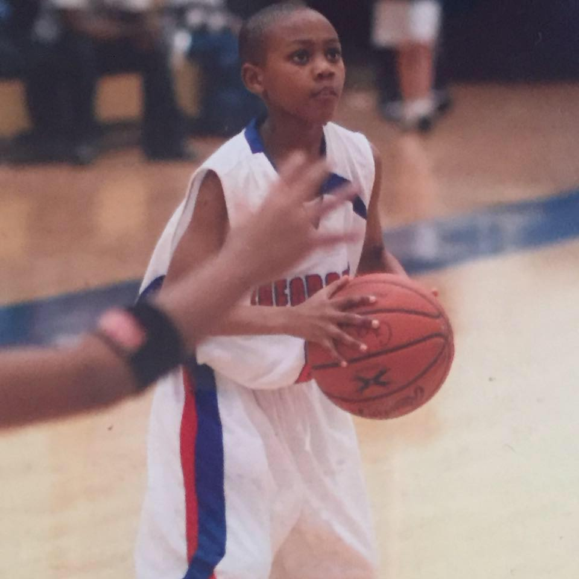
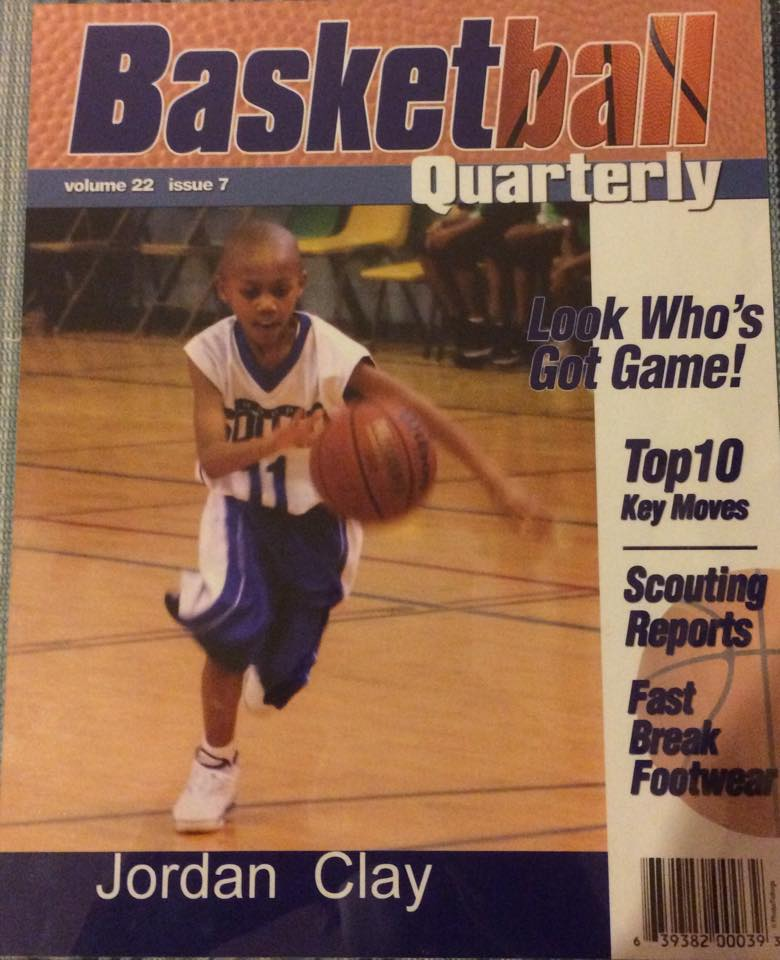
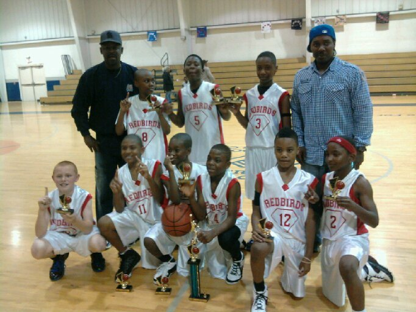
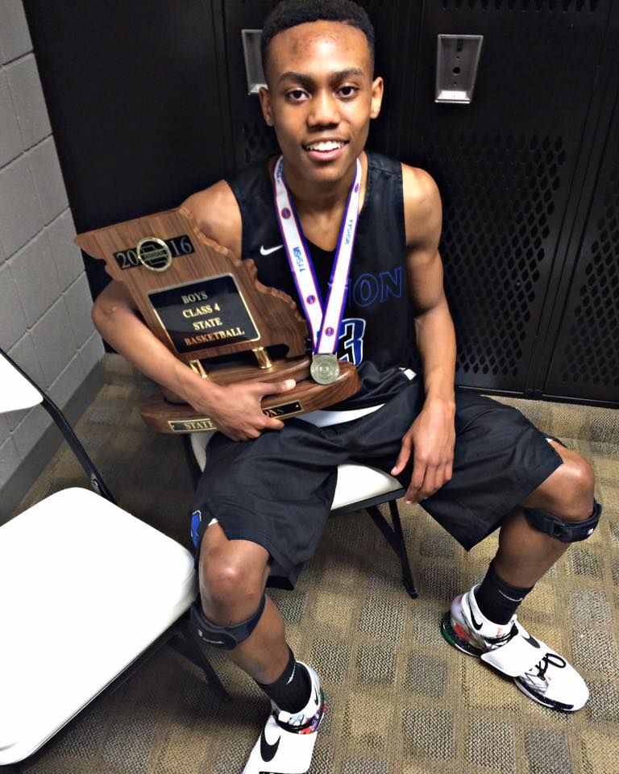
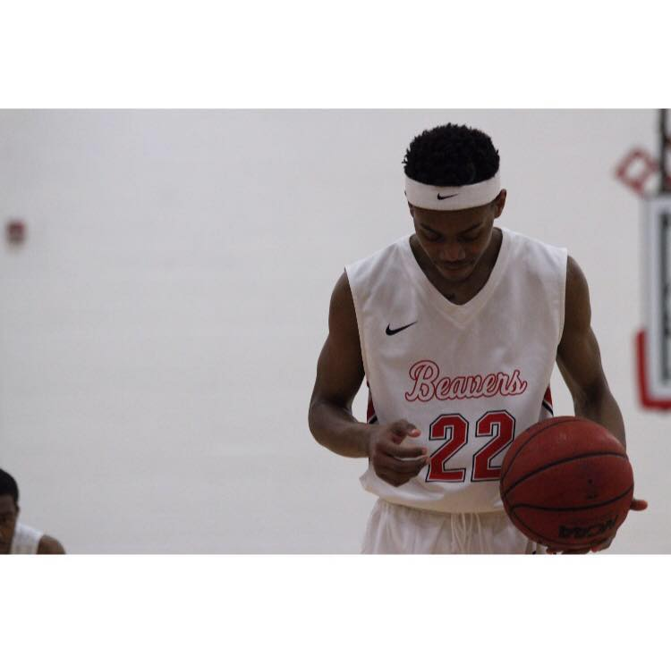

Basketball Life
So this all starteed when I could walk, once I started wlaking was when about when I was able to touch the ball and shoot through the hole. I started playing organized basketball when I was about 9, 10 yrs old. I played with many teams, if it was summer league ball "The Enforcers" "Arch Rivals" "The Bears" or high school "Soldan Tigers" "Vashon High School" to playing college basketball "Blackburn Beavers". I faced alot through out my years of playing basketball, if it was going a game without scoring, to a game without getting any shots to fall, to getting technical fouls, to making game winners, to being the mvp of a game, to even breaking a bone.... My junior year of highschool playing for Vashon, coming off the bench in the second 2 quarter, played about two minutes until I went up grabbed a rebound and came down wrong feeling nothing but pain and seeing nothing but the end of my career doing something I cherished and couldn't live without, BASKETBALL. Afer being rolled off the floor in a wheel chair theree were so many thoughts going through my head, but I kept praying knowing that things would get better. After having surgery I recovered in about 1 month and was back on the court in no time. Finishing that season with 3 place in the PHL, didn't realize that that would be my last game playing with my uncle being my coach. There was news that we were getting a new coach and there whole team was coming. Although playeres that were already there weren't given a fair chance of playing we kept playing and finished the year off as State Champs... What a great way to end my senior year. Even though I finished as a State Champ it didn't reallly excite me as much. Why? Because I didn't wanna stop there I wanted to continue playing ball and I felt very doubtful about that because I had no coaches looking at me.. Then a blessing came through and I was already getting tired of this coach texting me. I didn't stop there I started back playing at Blackburn College, making a name for myself and being one of many freshman that played on Varsity. I plan on continuing my next year at Blackburn College, and see what the future holds after that!




